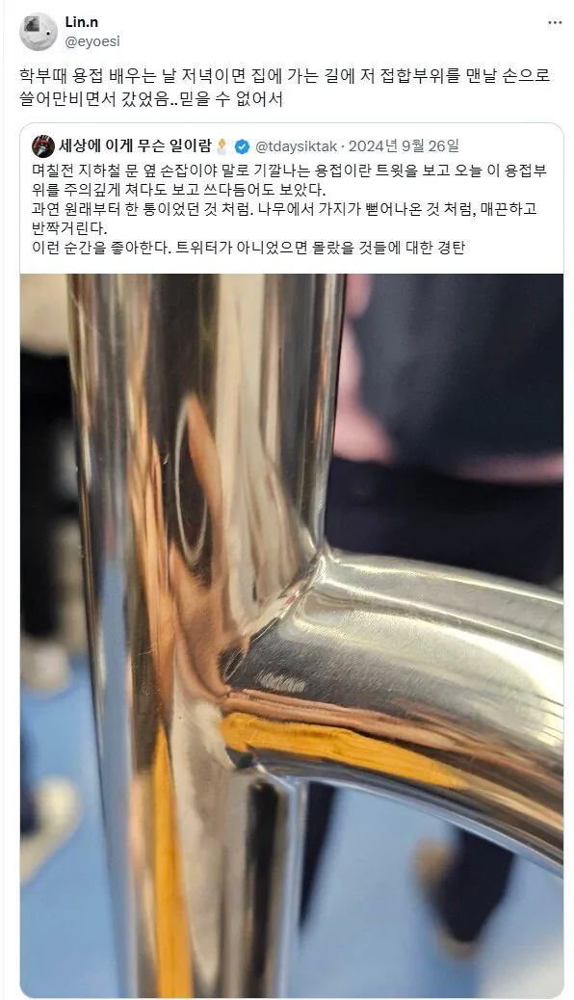

용접배우면 다르게 보인다는 물건
댓글
잘 해놔야.. 사상도 잘 나옴.
당연히 그라인더로 갈아냄
용접하고 연마 한거 아니야?
그럼에도 곰보같은거 없이 깔끔하다는거지
앉아서 저기 만지고 있으면 다른 사람이 꼭 엉덩이 들이대서 빼게됨
그런식으로 엉덩이를 만지고 다니셨군요?
이런 순간을 좋아한다. 개드립이 아니었으면 몰랐을 것들에 대한 경탄
북
저기 머리대고 쉬고있었는데 어떤년이 빵딩이 들이민적있음 기분좋았음
앉아서 편하잖아 선사람한테 양보해라
나 섰어
피고인 이게 사실인가요
대충 용접하고 샌딩만 해도 가능하지않나
용접 샌딩만으로 이걸했다고?
미친놈들이구만....
화난 펭귄같이 생겼다
보통 화난게 아니야
난 화난 강아지로보인다 맨앞이 코고
물론 용접도 잘한거지만 저쪽은 바렐연마의 영역이라서 어느정도 용접만 하고 바렐연마 하면 다 나옴.
사상하고 샌딩하면 공정만 더 길어짐. 그리고 저 별거아닌 핸드레일이 상당히 비싸기때문에 가능함.
가끔식 저거 못생긴거 찾는 재미가잇ㄱ음
그건 대부분 연습생들이 한거라더라
반죽짜는걸로 기름종이로부터 한 20cm 위에서 꾸덕한 잔둑을 톡톡 떨궈서 직선 만드는게 용접
조금 튀어나온 부분을 손가락으로 싹 치우는게 연마라고 생각해보면
연마 전까진 몰랐던 공기가 있을 수도 있는거고, 그냥 겁나 치운다는 생각으로 많이 짜면 연마가 힘듬
사상으로 만드는거 아닌가
저거 변기보다 더러움
폰도마찬가지
아아...저건 연마작업, 폴리싱이란거다
전문용어로 빠우라고 하지
연마하고 경질도금 올리면 거울쌉가능
스댕이면 적당히 닦아주고 전해연마 ㄱ
용접 문외한이 만져도 맨질맨질하니 기분좋음
아크로 쳐발쳐발 몇 번 해본 애들이나 드는 생각임
배우면 그런 생각 안 함
살면서 용접하는거 티비서만 보다가 군대에서 작업하는데 용접할줄 아는 사람있냐고 묻길래 내 동기새끼가 손을 들더라 동기라고 가서 보조하래 동기 이 시발련이 맨눈으로 용접 조지고 난 그거 쳐보다가 둘다 아다리나서 사경을 해맸음
저거 티그로 3분컷임 ㄹㅇ
남들은 손잡이 잡고 버티는데 용접 배운 사람은 손잡이 검수하면서 퇴근함
당연히 사상 했지 저건ㅋㅋㅋ 티그로 때우고 사상하면 티그 처음 잡은사람도 저렇게 만들수있음
저건 오히려 모르는 사람이 아는척하는거네 ㅋㅋ
예전에 용접하는사람이 내차 머플러 용접부위 비드보고 감탄하더라 용접진짜 기가막히게해놨다고 어디꺼냐고 ㅋㅋ 용접좆고수라고 ㅋㅋ 내눈엔 걍용접이였는데 현직들은 눈으로만봐도아나봄
그러게 선이 딱 이어지네
근데 저건 빠우친거 아님?
저건 사상공이 잘한거 아닌가